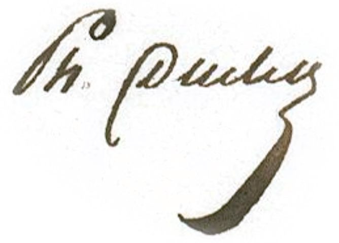

BnF Ducler collection

Philippe Étienne Ducler (1778–1840) was a colonial administrator in Karikal. He commissioned a jailed brāhmaṇa to produce a set of Tamil palm-leaf manuscripts, which were eventually purchased by the Bibliothèque nationale. For more information on Ducler and his manuscript collection, see Francis & Vaissaire 2022.